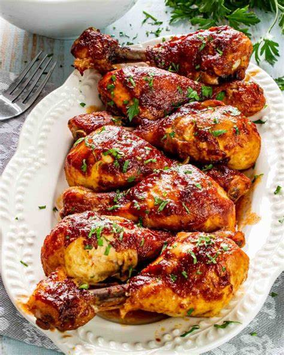

|  |
Description
These drumsticks are coated in a barbecue sauce and baked in the oven for the perfect crispy skin (that doesn't require a deep fryer or grill) - and the best part is they only require five minutes of active hands-on time!
Ingredients
- 6 chicken drumsticks
- 80ml ketchup
- 80ml white vinegar
- (optional)120ml water, or more to taste
- 50g brown sugar
- 20g butter
- 10ml Worcestershire sauce
- 4g dry mustard powder
- 5g chili powder
- salt to taste
Steps
- Assemble the ingredients, preheat the oven to 200°C (400°F), and place the drumsticks in a 18×28 cm baking dish.
- Whisk ketchup, vinegar, water, brown sugar, butter, salt, Worcestershire sauce, mustard, and chili powder together in a bowl; pour mixture over drumsticks. Cover with aluminum foil.
- Bake in the preheated oven for about 1 hour, or until the meat is no longer pink at the bone and the juices run clear, turning the chicken halfway through. An instant-read thermometer inserted near the bone should read 74°C (165°F).
- Serve hot and enjoy!
|